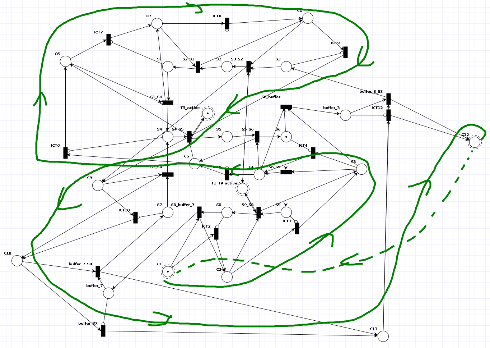

Assumptions
- Due to the rules of how fairness is described in the assignment, we assume that every trolley needs to do a transition before changing the lights and going to the next state. If a trolley is behind a red light and cannot proceed, the simulation is not able to continue (fairly).
- Due to this assumption we will describe the simulation theoretically, as the simulation can continue and practically, i.e. how our Petri net works.
File structure
The images generated for this assignment can be found in the image folder. Next the models contain the TAPAAL files. Lastly the generated dot files by the python script can be found in the dot folder.
Part 1: Railroad system
Describe and validly construct a single rail track/segment. What happens when this is a light?When we want to construct a track we need to keep in mind that a track is just a place from which arcs can arrive and depart to any other place. For that reason are also equivalent to the stations. We note 3 different tyeps of rail segments. The first one is a regular rail segment where an arc arrives and an arc departs. As most parts in the rail network will be. The second rail segment will 'split' the trolley, meaning that it just can go 1 direction or another. The last type is a piece of track that will join 2 tracks into 1 single track. All the types are depicted below.
Currently we don't have introduced lights into the system. First we want these lights to alternate between red and green. We can do this by creating 2 places, to alternate, we also need to create 2 different transitions. We go through 1 transition to go to another state of the light. At most 1 transition can be active this way. To picture this more clearly we added an image and a tapaal file.
Construct the full railroad.In order to make a track with a light, we will just consider one outgoing arc to a transition. This will make it easier to depict. We just need to pull an arc from a light to a transition that is going to another track in order to 'block' or 'allow' a trolley to pass. In the picture below we clearly can see that a trolley only can pass if there is a token in the green light. In order to not lose the token of the light, we return this token to it.
Construct the full railroad.
To construct the railroad in TAPAAL we first have to understand how the tracks are laid out. How we understand it is depicted in this image.

The next step is to define our tracks as places and our trolleys as tokens, the transitions would indicate where the trolley can go to.
We notice that the lights of the tracks that have one, alternate between the tracklights themselves. Therefore, we can use instead of red and green the terms of active for a certain track. This makes it much easier to understand when a light is active and when it's not.
If we utilize shared places for the lights, we can easily integrate them in the circuit. This is visualized in the image below. We also named all the tracks with SX (X is a number). These are the track segments used.
Introduce the clock into your model. Make sure the required events (see above) only happen exactly once for each "tick". Clearly describe what is used to accomodate for the introduction of the clock.In order to introduce the clock into the network we need to look back at introducing fairness in a system. We used a small subset of this component in our network. This part works as follows, we possibly have a token in the black state above, and we want to transition it to the state below. If we only want one token to pass through, we do this by utilizing the blue places and arcs, which has an arc into the transition that allows the black place token to move to the below place. However, we always need to be able to pass through the clock token so in order to do this we make use of a new transition. This transition has 2 incoming arcs, one is a regular arc the other arc is an inhibitor arc (it allows to check if there is nothing inside the place that it comes from and as a result will be active). So if there is nothing in the black place above then we can move through the purple part of the clock.
We now need to apply this part to the circuit that we have drawn. To do this we introduce for each transition a connection to one such a clock element (as shown in the picture below).
In order to make this clock work in the circuit we go in a different direction than the direction in which the trolleys move. This is to avoid that a trolley will be moving more than one step in a single cycle. We also see that the clock enables two different transitions at once, this is because the train can choose between two tracks. This is shown below.
We have some places that have been turned into buffers, this is because we accidentally pass these places 2 times. This is to avoid the trolleys be moved twice in one clock cycle. We can see such a buffer part from close-up. We see that is an extra place and then the clock passes to the actual track after it has done all the transitions.
Because we need to update the lights the clock needs to pass through there for a last time, this just enables the transitions to fire when the clock token passes there and finally gives it to the first clock place. So it can make a new cycle possible.
At last, we can create the circuit with the direction of the clock indicated in green. We also added the circuit without any annotations. In order to make more sense of the entire circuit we labeled each of the transitions and places, we will omit any earlier explained notation (SX and the light part). For the places: CX (X a number) is the clock going from 1 through 12 and, buffer_X (X is the place for the next state) is the buffer to be emptied after a clock cycle. For the transitions: ICTX (X integer which represents the next clock number) and SX_SY (SX track from and SY track to, this can also be a buffer_X or buffer_Y).
Part 2: Traces
A trolley traveling for at least 2 tracks before passing through a light that is red when the trolley arrives there.We can also generate interesting traces with our model. One of them is a trolley traveling for at least 2 tracks before passing through a light that is red when the trolley arrives there. Here is the trace and the initial setup.
We carefully change the initial state of the light such that it has to stop before the red light.
A trolley that travels in a single "8"-shape over the network, without ever seeing a red light.Another trace is for a trolley that travels in a single "8"-shape over the network, without ever seeing a red light. Again here are the traces and initial setups.
This trace is very long as we need to check a lot of states.
Part 3: Preliminary analysis
Reachability/Coverability
Argue why your solution would (not) produce an infinite reachability graph.The reachability graph for this model will be finite as there are a finite amount of valid states. There are a finite amount of states and there are either 0 or 1 tokens in a state. We can in fact calculate an upper bound which is 2n with n being the number of states.
Generate the reachability graph and discuss any patterns you identify. If your reachability graph is infinite, generate the graph for a representative subset of your model instead.Below are, respectively, the reachability and coverability graphs with a single trolley starting middle-right. Both are finite as expected. The first pair is generated from a setup where no trolley is present. We can see the clock token going around and the light switching at the end of this sequence. After two lights have changed we return to the initial state of the clock.
 Generate the coverability graph and discuss any patterns you identify.
Generate the coverability graph and discuss any patterns you identify.
We can also notice that the reachability and coverability graph are identical. This is due to the fact that the amount of tokens is bounded (by 1). Because of this we will omit discussing the coverability graph.
We can also simulate two trolleys, starting on S1 and S6 Here the graph is not cyclic because we encounter a deadlock, we will discuss this setup in a later exercise.
 Can you add/remove a place/transition such that the reachability graph becomes finite if it was
infinite (or vice-versa)? Your new model does not have to conform to the requirements.
Can you add/remove a place/transition such that the reachability graph becomes finite if it was
infinite (or vice-versa)? Your new model does not have to conform to the requirements.
To make this graph infinite we could add one or more transitions to 'duplicate' clock tokens. This would cause the amount of clock tokens to become infinite, each clock iteration. This will possibly make too much transitions of a trolley before even changing the lights. The yellow part is the added transition. This will add an infinite amount of tokens, because the token in C1 never leaves C1, and will be passed through to C2.

Invariant analysis
Generate the P-invariants for the model and explain what they mean in terms of the railroad.
M(T1_T9_active) + M(T3_active) = 1
M(TAPN1.S1) + M(TAPN1.S2) + M(TAPN1.S3) + M(TAPN1.S4) + M(TAPN1.S5) + M(TAPN1.S6) + M(TAPN1.S7) + M(TAPN1.S8) + M(TAPN1.S9) + M(TAPN1.buffer_3) + M(TAPN1.buffer_7) = 2
M(C1) + M(C12) + M(TAPN1.C10) + M(TAPN1.C11) + M(TAPN1.C2) + M(TAPN1.C3) + M(TAPN1.C4) + M(TAPN1.C5) + M(TAPN1.C6) + M(TAPN1.C7) + M(TAPN1.C8) + M(TAPN1.C9) = 1
Which invariants did you expect? Which ones are surprising? Why?
First and foremost, the invariant related to the clock variables makes the most sense. This is because there must be one token that goes round at all times. The second part is the light that switches between 2 different states, namely 'T1_T9_active' and 'T3_active'. So this invariant always should be equal to 1. Lastly, we have the invariant of the trolley track system, at all times the amount of trolleys should be equal to 2. Which is also written down by the invariant.
Can you add a single place or transition to the model that changes these invariants (for the better or the worse)? Your new model does not have to conform to the requirements.
M(T1_T9_active) + M(T3_active) = 1
M(TAPN1.S1) + M(TAPN1.S2) + M(TAPN1.S3) + M(TAPN1.S4) + M(TAPN1.S5) + M(TAPN1.S6) + M(TAPN1.S7) + M(TAPN1.S8) + M(TAPN1.S9) + M(TAPN1.buffer_3) + M(TAPN1.buffer_7) = 2
We used the infinite petri net solution in order to remove the invariant of the clock. It doesn't necessarily make the invariants better or worse, but just reduces it to 2. Because the clock now has an infinite amount of tokens which are being generated through the course of time.
Part 4: Query analysis
Boundedness
Use one or multiple queries to check the boundedness of your net. You may use logic, reasoning and the already obtained P-invariants to simplify/minimize your queries. Is the result what you expected? Why (not)?
AG (TAPN1.S1 <= 2 and TAPN1.S2 <= 2 and TAPN1.S3 <= 2 and TAPN1.S4 <= 2 and TAPN1.S5 <= 2 and TAPN1.S6 <= 2 and TAPN1.S7 <= 2 and TAPN1.S8 <= 2 and TAPN1.S9 <= 2 and C1 <= 2 and TAPN1.C2 <= 2 and TAPN1.C3 <= 2 and TAPN1.C4 <= 2 and TAPN1.C5 <= 2 and TAPN1.C6 <= 2 and TAPN1.C7 <= 2 and TAPN1.C8 <= 2 and TAPN1.C9 <= 2 and TAPN1.C10 <= 2 and TAPN1.C11 <= 2 and C12 <= 2 and TAPN1.buffer_3 <= 2 and TAPN1.buffer_7 <= 2 and T1_T9_active <= 2 and T3_active <= 2)
For this part we suppose that we always use one token for the clock, two tokens to represent the trollies that go around and one token for managing the lights. The initial placement of the clock token will always be in C1, as for the light token we will put the token in T3-active.
The query described above is the query that can be used to detect a 2-bounded petri-net. The AG says that it needs to check the equation between braces for every trace of every possible combination of markings. The equation means the amount of tokens in each place should be smaller than 2. We only tested the initial marking and it checked out. It even could be said that that marking is considered safe in our petri-net.
Because it would take up too much time to check each configuration manually against the formulated query. In order to make this task much easier we could use the p-invariants. In essence they mean that the total amount of tokens in a set of places never exceeds a certain value. Therefore it means that we could put an upper bound for each set of places. If the union of these sets is the entire set of places then we can use the maximum of the p-invariant formulas. Then we can say that the petri-net is k-bounded, with k the aformentioned maximum of the p-invariant formulas. In this case the union of all the used places in the formulas equals to the total set of places, for that reason we can say that this petri-net is 2-bounded.
Deadlock
Use a query to find whether or not there is a deadlock in your net. What fireings cause this to happen? What does this mean for the railroad?
EF !(TAPN1.ICT2 or TAPN1.ICT3 or TAPN1.ICT4 or TAPN1.ICT5 or TAPN1.ICT6 or TAPN1.ICT7 or TAPN1.ICT8 or TAPN1.ICT9 or TAPN1.ICT10 or TAPN1.ICT12 or TAPN1.S6_buffer or TAPN1.buffer_3_S3 or TAPN1.buffer_S7 or TAPN1.buffer_7_S8 or TAPN1.S8_buffer_7 or light.switch_1_9 or light.switch_3 or TAPN1.S2_S1 or TAPN1.S3_S2 or TAPN1.S1_S4 or TAPN1.S4_S5 or TAPN1.S5_S6 or TAPN1.S6_S9 or TAPN1.S7_S4 or TAPN1.S9_S8)
In order to detect a deadlock in the system, we should have a situation where no transition is able to fire. Therefore, we use need to check if there is a trace where this is the case. This can be done by using the AF property. The equation that needs to be checked is to check the activeness of each transition in the system and or it to detect if at least one of them is active. Then we negate this whole expression to get to a marking that contains no transition that is active.
When we take the initial marking, we get the trace of the deadlock as pictured below. This means that when a trolley stands behind a red light while the clock tries to pass, the system will get in a deadlock. It won't be able to fire any new transitions.
If there is a deadlock, describe how you can modify your net to make it deadlock-free. Can you identify this deadlock in the Reachablity/Coverability graph?
We can make this net deadlock free, by allowing the clock to go around whenever there isn't any transition able to fire because of a red light. This means that we take an inhibitor arc from light and put it into a new transition T. We connect another arc from the clock place to T. From T we go to the next clock variable. In order to avoid T to be active when there isn't any trolley in the place before the light, we create an arc between T and the place and back. In order to see this clearly, we've supplied a support image below. The yellow parts are new. This is also written in this file.
We can identify this deadlock in the reachability graph by looking at the state which has no outgoing transitions. This means that there are no possible transitions to depart from when the petri-net is in that marking. The same counts for the coverability graph.
Liveness
Pick an interesting transitions in your net and determine the their liveness using queries. (Exercise Copy-pasted from assignment, please fix typos/errors).To get some interesting results we will try to find an example of every form of liveness. We will start from L4 to L0. For simplicity, we will only look at transitions between stations, aka the Sx_Sy transitions.
Before we study the transitions we can establish the queries to check for liveness. We denote the transition under study as TUS.
L0 = AG !TUS # on no path will TUS ever fire
L1 = EF TUS # on some path sometime TUS must fire
L2 = N/A # not applicable
L3 = EG (EF TUS) # on some path it must always be possible to fire TUS
L4 = AG (EF TUS) # on every path TUS must be L1
Starting with L4 we look at the transition S5_S6. Intuitively, if there is no deadlock due to trolleys halting at red lights, the trolleys will always be able to reach this transition. We can verify this with the aforementioned query plugging in S5_S6. We can then indeed see this is true.
Because our system consists of 2 big loops, every transition is reachable from every state (at least the trolley transitions). This means there are no strictly L3 transitions.
The same argument can be made for L2.
As our system deadlocks at a red light we can have L1 transitions in starting states where the trolley will advance a single station and then block at the light. For example S1_S4
In the case that there is an L1 transition before the light, every other transition to a station will be L0 as it's blocked.
Can you add a single place/transition to alter this result?We can alter the track to make every L4 transition L3 by adding a branching dead-end to the track in some station. Checking L3 can be done by checking if there is some sequence on which no deadlock occurs, or in temporal logic: EF !deadlock must be true.
Fairness
Prove that you've implemented "true" fairness. This means that for each clock event can only happen once for every clock tick. For instance, it is not possible for a trolley to move two tracks in a single clock tick. Your proof may consist of examples, queries, logical statements... As long as you can validly and objectively argue that there is "true" fairness, this will be accepted.To achieve fairness we introduced the clock. The intention of this clock is to reduce the amount of possible transition to 1 so there is no non-determinism. Having multiple possible transitions is only allowed in cases of true randomness i.e. the split for the trolley.
Because the number of states is constant but the number of trolleys is variable we decided to update every station, and move the trolley if it has one. Immediately, the problem arises that when updating state 1 and moving the trolley to state 2, it is still possible to update state 2 later on and move the trolley twice. To avoid this we need a certain ordering where we go in a backwards direction so that when we update a state it can only contain untouched trolleys. The problem with this approach is that the track-graph has cycles and is not topologically sortable. So just updating every state, in any order, will not work. We notice this problem arises either at the split or join, so in our solution we solved this problem by introducing a buffer state which is updated last.
We achieve this by introducing a new arc to a buffer state, which will be filled if there is a token that goes to that buffer state. We also need to note that a buffer state is a temporary replacement of the next station. Therefore, we let the clock pass the transitions that go to this station for which we built a buffer.
It is important to notice we use a slightly alternate approach to the clock than described in the lecture notes. We opted to, instead of splitting and joining the clock token to have a cycle (read clock) granting the token to a certain transition and then returning it and going forward in the cycle.
Due to the fact that we use this clock which has a single token permitting a certain transition to fire and because the only way the token can return to a certain position is to complete an entire loop, we argue that our circuit is fair.
The downside to this fairness, as described in the deadlocking section is that when a state cannot make progress it will halt the whole system.
Safety
Can two trolleys crash? Why (not)?We believe trolleys cannot crash after the first complete lap. The explanation follows.
For the remainder of this exercise it's important to note in which cases trolleys can crash:
- Crashing into the trolley in front that is waiting for a red light.
- Merging together onto the same track.
In the simulation, when a trolley is right behind another one, it can happen that for that certain tick, those two trolleys will be on the same square because one has been updated and the other one hasn't. We assume that this is an invalid 'in between' state and will not count those kinds of collisions.
Now that we have a basic understanding of collisions let us discuss the theoretical cases of trolleys in our system.
Can you find an acceptable initial marking such that there is a trolley collision?Let's start by examining the case where every track is occupied by a trolley. The trollies waiting for the red light will be rear ended by the other trolleys as they just move forward. We can conclude that trollies starting at a red light must never have a trolley behind them.
As the period of the track is 6, meaning every rotation will be 6 steps and the period of the lights is 2 we can infer that a trolley either always has a green light or first a single red light continued by only green lights. This is the reason we need a single first lap to see if there is a crash because afterwards they will all drive in harmony having only green lights.
Because of the light being green only half the time the maximal throughput of a track is only 50%. This means that if we were to have only the upper part of the circuit we could maximally fit 3 trolleys because it is 6 tracks long. The following image illustrates why we need space between the trollies.

Due to the fact that every 'lap' only 3 trollies can pass through a red light, we are bottlenecked by the middel red light. This leaves us to conclude that the optimal configuration (without crashing) is 3 trollies all separated by one station as illustrated below.
| either here | ||
| * | * | |
| or here |
Generally we could state that if we were to apply a 'fold' transform to the tracks such that trollies op the bottom track would be on the top track, and they all have distance one after this transformation, the system is safe.
We can now look at if our system matches the theoretic analysis.
We can run this simulation forever, this is the start of the trace file. We can prove this more rigorously using the reachability graph.
Provide a trace in which the trolley do crash. If they can't, prove (using queries, logic reasoning, already obtained results...) that this is impossible in your net.If we have 4 trollies, that are all separated by one track but without the transform first, we see an imminent crash.
Can you find a way to add a single transition/place such that there is a possibility for crashes?Adding a transition that skips a single track won't result in any additional crashes after the first lap because then taking the 'shortcut' will result in just waiting behind the following red light and gaining nothing.
We could make the system a lot more random/dangerous by adding a simple transition that skips two tracks. For example a separate track from middle-left to middle-right. In case of two trolleys, this would result in a 50/50 chance of crashing every lap. It may also be possible they never crash due to sheer luck.